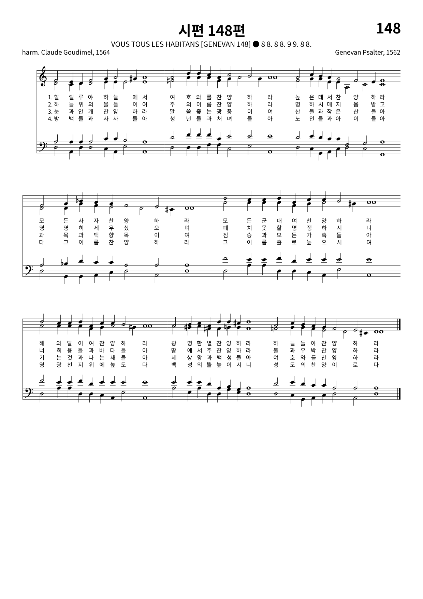

Psalm 148
VOUS TOUS LES HABITANS [GENEVAN 148] · 8 8. 8 8. 9 9. 8 8.
English title: All Praise the LORD, O Sons of Light!
Tune: Genevan Psalter, 1562 · Harmony: Claude Goudimel, 1564 · Lyrics: Korean adaptation of Psalm 148 from the Korean Revised Version (AI draft adaptation · not yet theologically reviewed) · 4 stanzas
Score PDF MusicXML (for printing) MusicXML (for accompaniment, with prelude and repeats) Read Psalm 148 (Korean Revised Version)
Score
← Psalm 147 ListAccompaniment (in preparation)Psalm 149 →
Lyrics (Korean)
Stanza 1
할렐루야 하늘에서
여호와를 찬양하라
높은 데서 찬양하라
모든 사자 찬양하라
모든 군대여 찬양하라
해와 달이여 찬양하라
광명한 별 찬양하라
하늘들아 찬양하라
할렐루야 하늘에서
여호와를 찬양하라
높은 데서 찬양하라
모든 사자 찬양하라
모든 군대여 찬양하라
해와 달이여 찬양하라
광명한 별 찬양하라
하늘들아 찬양하라
Stanza 2
하늘 위의 물들이여
주의 이름 찬양하라
명하시매 지음 받고
영영히 세우셨으며
폐치 못할 명 정하시니
너희 용들과 바다들아
땅에서 주 찬양하라
불과 우박 찬양하라
하늘 위의 물들이여
주의 이름 찬양하라
명하시매 지음 받고
영영히 세우셨으며
폐치 못할 명 정하시니
너희 용들과 바다들아
땅에서 주 찬양하라
불과 우박 찬양하라
Stanza 3
눈과 안개 찬양하라
말씀 좇는 광풍이여
산들과 작은 산들아
과목과 백향목이여
짐승과 모든 가축들아
기는 것과 나는 새들아
세상 왕과 백성들아
여호와를 찬양하라
눈과 안개 찬양하라
말씀 좇는 광풍이여
산들과 작은 산들아
과목과 백향목이여
짐승과 모든 가축들아
기는 것과 나는 새들아
세상 왕과 백성들아
여호와를 찬양하라
Stanza 4
방백들과 사사들아
청년들과 처녀들아
노인들과 아이들아
다 그 이름 찬양하라
그 이름 홀로 높으시며
영광 천지 위에 높도다
백성의 뿔 높이시니
성도의 찬양이로다
방백들과 사사들아
청년들과 처녀들아
노인들과 아이들아
다 그 이름 찬양하라
그 이름 홀로 높으시며
영광 천지 위에 높도다
백성의 뿔 높이시니
성도의 찬양이로다